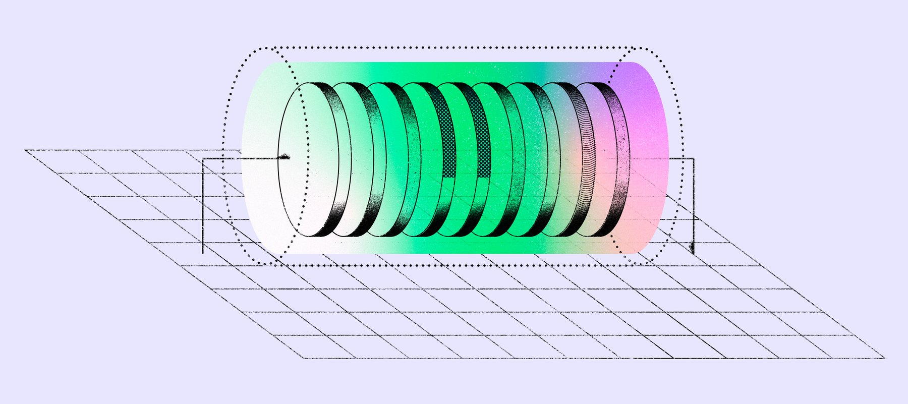

Hosts
Amazon Linux 2023 and Ubuntu 22.04 or 24.04, on x86_64 and arm64. Run setup once, separately from the download.
Open source · awslabs · Apache-2.0
Bootstrap your node from a pre-synced snapshot in Amazon S3. Each snapshot is a copy of a node database from the network’s upstream publisher, refreshed on their schedule.
$ ./snapshot.sh --list
ethereum-hoodi-geth tar-zstd-stream-v1 3770000
ethereum-mainnet-geth tar-zstd-seekable-v1 26139552
ethereum-mainnet-nethermind tar-zstd-seekable-v1 26139552
ethereum-mainnet-reth tar-zstd-seekable-v1 26149553
solana-mainnet-agave archive-set-v1 454662635
$ ./snapshot.sh --snapshot ethereum-mainnet-reth --out /data/ethereum-mainnet-rethWhy snapshots
Pick a snapshot ID, point it at a volume, and run one command. The catalog decides where the data lives and how it’s delivered.
Select a stable ID like ethereum-mainnet-geth. snapshot.sh resolves the newest catalog entry when you run it, so there’s no block, script, or extraction method to choose.
Seekable snapshots decode independent zstd frames in parallel and write the filesystem tree directly. Local NVMe gets O_DIRECT writes; EBS gets buffered writes.
Credentials, bucket access, artifact size, output safety, dependencies, and free space are validated before any data is written.
Worker count follows CPU affinity, cgroup CPU quota, and memory headroom, up to 96. Runs in Docker, Amazon ECS, and Kubernetes.
Snapshots are reachable only through an Amazon S3 gateway VPC endpoint, from an EC2 instance in the same Region.
Standard charges apply for the instance, EBS volumes, and other AWS resources you use.
Get started
Run this on EC2, not your laptop. Snapshots are only reachable through an Amazon S3 gateway VPC endpoint, so you download them from an EC2 instance in the same Region. A laptop or a browser won’t work.
Run these steps on an EC2 instance in us-east-1, eu-west-1, or ap-northeast-1, running Amazon Linux 2023 or Ubuntu 24.04. Its VPC needs an S3 gateway endpoint, and its instance profile needs s3:GetObject and s3:ListBucket.
{
"Version": "2012-10-17",
"Statement": [
{
"Effect": "Allow",
"Action": ["s3:GetObject", "s3:ListBucket"],
"Resource": [
"arn:aws:s3:::blockchain-snapshots-us-east-1",
"arn:aws:s3:::blockchain-snapshots-us-east-1/*",
"arn:aws:s3:::blockchain-snapshots-eu-west-1",
"arn:aws:s3:::blockchain-snapshots-eu-west-1/*",
"arn:aws:s3:::blockchain-snapshots-ap-northeast-1",
"arn:aws:s3:::blockchain-snapshots-ap-northeast-1/*"
]
}
]
}Scope the resources to the Region you use. Bucket names come from each Region’s catalog.
Clone the repository, then run setup once. Setup installs AWS CLI v2; Python 3 with boto3 and zstandard; zstd, tar, curl, and unzip; and mountpoint-s3 with FUSE when the instance supports them. Otherwise, downloads use S3 directly.
sudo dnf install -y git
cd ~ && git clone https://github.com/awslabs/blockchain-snapshots.git
cd blockchain-snapshots/distsudo apt-get update && sudo apt-get install -y git
cd ~ && git clone https://github.com/awslabs/blockchain-snapshots.git
cd blockchain-snapshots/dist./snapshot.sh --setupSetup may prompt for sudo. Snapshot download commands don’t use sudo; run them as the account that should own the data. AWS Blockchain Node Runners uses bcuser.
Extract to a dedicated directory on a volume with room for the full snapshot. Pick the one that matches your instance.
Join the instance’s NVMe drives into one volume at /data. Instance types like i4i or i8g are the fastest option.
sudo bash setup-storage.shNo RAID needed. If it’s an extra volume (here /dev/nvme1n1), format and mount it once. If you’re using the root volume, just make the directory.
sudo mkfs.xfs -f /dev/nvme1n1 # skip if already formatted
sudo mkdir -p /data && sudo mount /dev/nvme1n1 /data
sudo chown "$(id -u):$(id -g)" /dataOn EBS the extractor writes buffered automatically; on local NVMe it uses O_DIRECT. Either way the result is identical. Size the volume for the snapshot’s extracted size, not its download size.
Pick a snapshot below and run its command from the dist folder. snapshot.sh resolves the latest catalog entry at execution time, checks storage, and selects the delivery method from catalog data. Each snapshot writes to its own folder under /data.
./snapshot.sh --snapshot ethereum-mainnet-geth --out /data/ethereum-mainnet-gethFor archive-set snapshots such as Solana, the files stay compressed because the node unpacks them itself. Start Agave with --snapshots pointing at that folder and --no-snapshot-fetch.
Live catalog
Loading catalogs…
How it works
The tooling has no hardcoded snapshot list. Adding a snapshot that uses an existing delivery protocol is a catalog change, not a tool release.

Reads the active-region registry, config/regions.json, published with this page.
Fetches the Region’s current catalog.json: CloudFront first, with an S3 fallback for private subnets.
Maps the stable ID to the latest catalog entry at execution time. No block, slot, or version is a user choice.
Checks credentials, bucket access, artifact size, output safety, dependencies, and available space.
Calls the handler for the protocol the catalog declares. An unknown protocol fails clearly and asks you to update the tooling.
| Protocol | Behavior | Free space checked against | Used by |
|---|---|---|---|
tar-zstd-seekable-v1 |
Fetches the manifest, decodes independent zstd frames in parallel, and writes the filesystem tree | The manifest’s exact uncompressed size | Ethereum Mainnet (Geth, Nethermind, Reth) |
tar-zstd-stream-v1 |
Streams the archive through zstd | tar and writes the filesystem tree |
A conservative estimate of 2× the compressed size | Ethereum Hoodi (Geth) |
archive-set-v1 |
Keeps the named full, incremental, and genesis archives for the node to unpack | Known artifact sizes plus a 5% margin | Solana Mainnet (Agave) |
Reference
One command for setup, discovery, and download. Logs go to stderr, so --json output pipes cleanly.
snapshot.sh --setup
snapshot.sh --snapshot ID [options]
snapshot.sh --chain CHAIN [--network NETWORK] [--client CLIENT] [options]
snapshot.sh --list [--region REGION] [--json]# machine-readable result on stdout, progress on stderr
./snapshot.sh --snapshot ethereum-mainnet-reth --json | jq -r .output_dir
# discover IDs, or narrow with selectors
./snapshot.sh --list --region us-east-1
./snapshot.sh --chain solana --network mainnetA partial selection that matches more than one entry lists the candidates instead of guessing. DEBUG=1 traces shell commands, keeps the per-run work directory, and logs each extraction group.
--snapshot ID | Stable catalog ID, such as ethereum-mainnet-geth |
|---|---|
--chain --network --client | Convenience selectors; must resolve to one entry |
--list | List available snapshots in this Region and exit |
--region REGION | Active Region. Defaults to AWS_REGION/AWS_DEFAULT_REGION, then EC2 IMDSv2 |
--out DIR | Output directory. Default: /data/<snapshot-id> |
--source MODE | auto | mount | s3. Auto uses mountpoint-s3 when FUSE is usable, otherwise direct S3 reads |
--workers N | Parallel workers; 0 is container-aware auto |
--o-direct MODE | auto | on | off. Auto enables O_DIRECT only on local NVMe, after a test write |
--force | Clear a non-empty output for filesystem delivery |
--json | Machine-readable final result |
--registry URL | Active-region registry override, for test registries |
REGISTRY_URL SOURCE WORKERS ODIRECT | Same as the matching options |
|---|---|
MS3_GBPS | mountpoint-s3 maximum throughput in Gbps. Default: 25 |
DROP_CACHES=1 | Drop the page cache before extraction (needs root) |
DEBUG=1 | Trace commands and keep the work directory |
status | success |
|---|---|
snapshot_id blockchain network client | What was resolved |
version | Resolved block or slot. block remains as an alias during the compatibility window |
delivery_protocol method | Protocol from the catalog, and the read path used: mount, s3, or archive-set |
region output_dir size_bytes duration_seconds | Where it ran, where the data is, and how long it took |
Where it runs
Amazon Linux 2023 and Ubuntu 22.04 or 24.04, on x86_64 and arm64. Run setup once, separately from the download.
Bake the dependencies into the image instead of running setup. Pass credentials through an ECS task role, EKS Pod Identity or IRSA, environment credentials, or reachable instance metadata. --source s3 needs no FUSE or extra container capabilities.
Node Runners uses bcuser (UID/GID 1002). Run setup and storage preparation in its root bootstrap, then run the download as bcuser so the node user owns the files.
Integrity
A node restored from a snapshot must validate against its network peers. The resolver validates catalog shape and exact S3 URIs, checks artifact size against the catalog before delivery, and checks seekable artifacts against their download manifest.
Snapshot data is mirrored from third-party blockchain foundations and teams. Availability doesn’t constitute endorsement. No availability, freshness, or correctness guarantee is provided, and this is not an AWS service or SLA.
Report a security issue